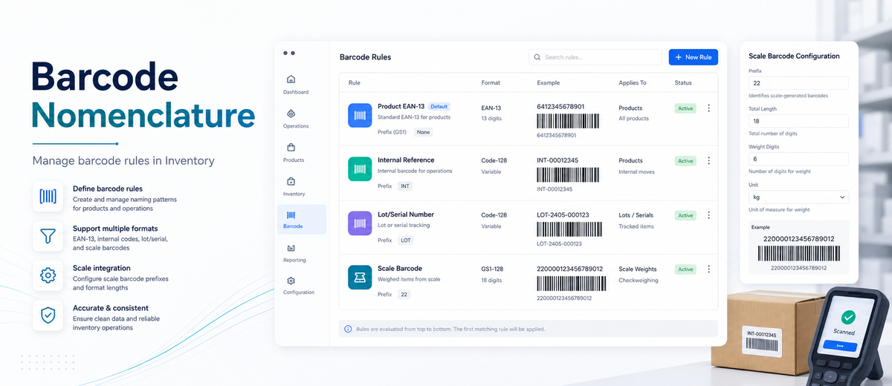
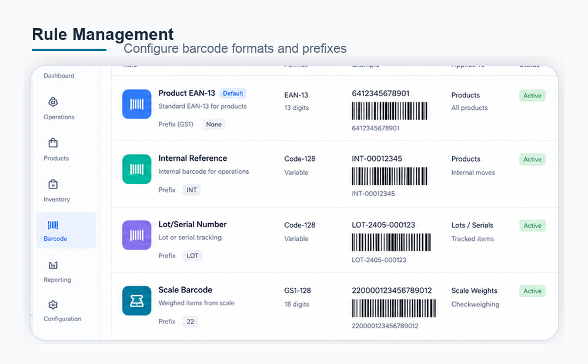
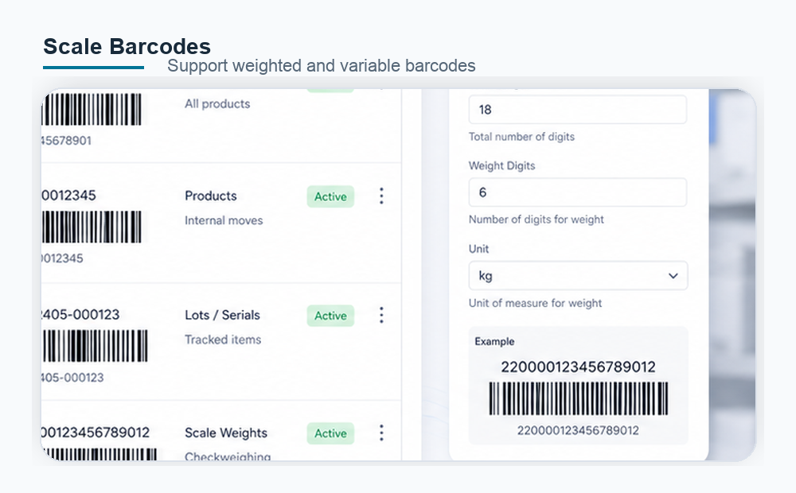

Unlock barcode nomenclature management in Inventory so managers can create, edit, and maintain barcode rules without technical shortcuts.
Adds Barcode Nomenclatures under Inventory configuration.
Create, edit, and remove nomenclatures and rules.

Expose the hidden Barcode Nomenclatures menu to Inventory Managers.
Manage EAN-13, weighted, price, and custom barcode prefixes.
Support scale-generated product barcodes used by inventory and POS flows.

